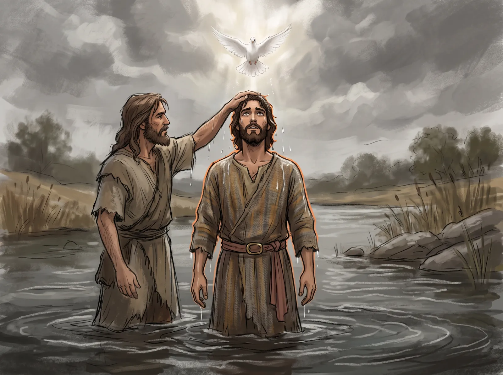
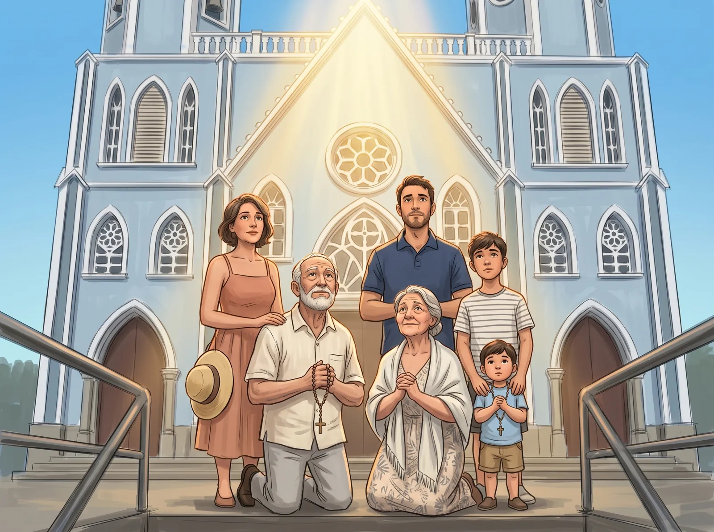

Renovación Carismática Católica
"Un Pentecostés que se renueva cada semana."
Grupo de oración · Miércoles 7:00 PM¿Qué es la Renovación?
La Renovación Carismática Católica es una corriente de gracia dentro de la Iglesia que busca traer a la vida de cada cristiano la experiencia de Pentecostés: avivar el Espíritu Santo que ya recibimos en el Bautismo y la Confirmación.
No se trata de algo mágico ni de un cambio de un día para otro. La conversión es un proceso de santificación, y el grupo de oración es el lugar donde, semana tras semana, encontramos el apoyo de la comunidad para las situaciones concretas que vivimos.
Todo se vive dentro de la Iglesia, en comunión con el párroco y con el obispo, siguiendo las orientaciones pastorales que la Renovación ha madurado en Venezuela a lo largo de cincuenta años.

"Todos quedaron llenos del Espíritu Santo y comenzaron a hablar en otras lenguas, según el Espíritu les concedía expresarse." — Hechos 2, 4
Un poco de historia
La Renovación nació como fruto del Concilio Vaticano II, para el que san Juan XXIII había pedido a Dios "un nuevo Pentecostés".
Del 17 al 19 de febrero, unos veinticinco estudiantes y profesores de la Universidad de Duquesne hacen un retiro para pedir los dones del Espíritu. Aquel fin de semana, conocido como el "Fin de semana de Duquesne", se considera el comienzo de la Renovación Carismática en la Iglesia católica. Pronto pasa a las universidades de Notre Dame y Michigan, y de ahí al mundo entero.
El 30 de septiembre se celebra en la casa de retiros La Macarena, de los salesianos, en Los Teques, el primer retiro de la Renovación en el país. De él nacen los primeros grupos de oración en Barquisimeto, Maracay, Valencia, Puerto Ordaz y Caracas.
En Pentecostés, el Papa recibe en Roma a unos diez mil carismáticos de cuarenta países y llama a la Renovación "una oportunidad para la Iglesia y para el mundo". Ese mismo año ya estaba presente en casi todas las diócesis de Venezuela.
A petición del papa Francisco nace CHARIS, el servicio internacional único que reúne todas las expresiones de la Renovación en el mundo, hoy más de cien millones de católicos.
Del 11 al 13 de septiembre, el Comité Arquidiocesano de la Renovación celebra en nuestra parroquia un Seminario de Vida en el Espíritu, y de él nace el grupo de oración de Santa Lucía.
El grupo de oración
Cada encuentro tiene un orden y unas pautas, pero se vive con la libertad del Espíritu Santo. Un equipo de servidores, junto con el coordinador, prepara la lectura y dispone cada reunión.
La Palabra
Es el eje de todo el encuentro. Escuchamos las Escrituras y dejamos que el Señor nos hable a través de ellas.
Alabanza y adoración
Cantamos, damos gracias y adoramos. Según el tiempo litúrgico, la reunión se orienta más a la alabanza o a pedir perdón.
Oración por los demás
Oramos en comunidad por los enfermos y por las necesidades de cada uno, poniendo al servicio los dones que el Espíritu reparte.
"Nosotros ponemos los leños, pero Él enciende el fuego."
Abierto a todos
No hace falta declararse carismático para ser recibido. Nadie viene por obligación: cada quien se acerca porque quiere.
El grupo es como una estación en medio del desierto donde uno se detiene a beber agua. No es una secta ni un grupo cerrado, sino una comunidad dentro de la Iglesia, y los que ya caminan en ella invitan a otros a sumarse.
También son bienvenidos los fieles de otras parroquias.

Un camino de formación
El Comité Arquidiocesano de la Renovación acompaña al grupo naciente durante sus primeros meses, hasta que su propio equipo de coordinadores pueda caminar solo.
Seminario de Vida en el Espíritu
El anuncio del amor de Dios, la reconciliación y la entrega de la propia vida al señorío de Cristo. En Santa Lucía se celebró del 11 al 13 de septiembre de 2026.
Parresía
Un encuentro en Maracaibo, previsto para octubre, que enseña cómo se vive un grupo de oración: qué se hace, qué no puede faltar y cómo hacer de cada reunión un Pentecostés en comunidad.
Aprendiendo a Caminar
Ocho semanas con una tarea diaria, a modo de devocional, y un encuentro semanal. Ayuda a hacer hábito de la lectura orante de la Palabra, la oración, la devoción a María y la vida sacramental.
La vida del grupo
El encuentro semanal de oración, la formación continua y la evangelización: el Espíritu recibido se hace servicio a la parroquia.
¿Cuándo nos reunimos?
No necesitas inscribirte ni haber hecho el Seminario. Solo ven.
Grupo de oración
Día: Todos los miércoles
Hora: 7:00 PM
Lugar: Salón San José, Parroquia Santa Lucía
* El encuentro dura alrededor de una hora.
¿Quieres dejar que el Espíritu avive tu fe?
Escríbenos si tienes alguna pregunta, o simplemente acércate el miércoles. Te esperamos.
Preguntar por WhatsApp